1060G90 diesel injection wiring harness - r r
- Path
- Procedures > 10 ENGINE > 1060 DIESEL FUEL INJECTION > 1060G pressure pump electric control > 1060G90 diesel injection wiring harness - r r
- Kind
- repair procedure (removal / refitting; the operation number is the code)
- Applies to
- engines: 1.3 JTD; all production periods
- Interactive page
- https://sloeber94.github.io/elrnDB-lYpsln/en/#/2429055
Applies to: engines: 1.3 JTD; all production periods
 Removing
Removing
 Refitting
RefittingPosition the vehicle on the ramp.
Proceed with removal 5530B10 battery - r+r .
Proceed with removal 5530B52 Battery DRIP TRAY/SUPPORT - R.R. .
1. Disconnect the electrical connection from the air flow meter.
 | Name | Connector |
|---|---|---|
1 | Air flow meter |
2. Loosen the band and disconnect the the turbocharger air inlet sleeve from the rigid pipe, air flow meter side.
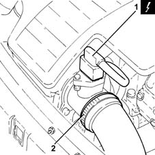
Applies to: engines: 1.3 JTD; all production periods
1. Remove the air filter (1a) complete with air flow meter (1b) by releasing from the underlying pins and then from the rear fastenings.
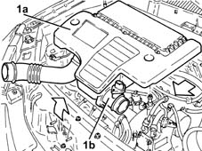
Applies to: engines: 1.3 JTD; all production periods
1. Open the clips (1a) and remove the cover (1b) from the engine compartment junction unit.
2. Undo the nut (2a) and disconnect the cable (2b) from the engine compartment junction unit.
3. Disconnect the electrical connections (3a) and (3b) from the engine compartment junction unit.
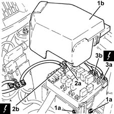
Applies to: engines: 1.3 JTD; all production periods
1. Rotate the engine compartment junction unit on its hinges.
2. Disconnect the electrical connection from the engine compartment junction unit.
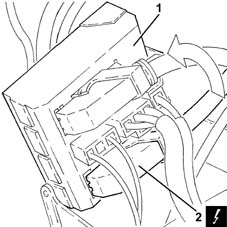
Applies to: engines: 1.3 JTD; all production periods
1. Undo the nuts (1a) and disconnect the earth lead (1b) from the battery terminal (-).
2. Disconnect the electrical connections from the pre-heating control unit.
| Name | Connector |
|---|---|---|
2 | Plug preheating control unit |
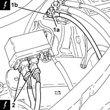
Applies to: engines: 1.3 JTD; all production periods
1. Disconnect the electrical connection.
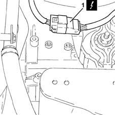
Applies to: engines: 1.3 JTD; all production periods
1. Disconnect the electrical connection from the engine coolant temperature sensor.
| Name | Connector |
|---|---|---|
1 | Engine temperature sender unit |
2. Disconnect the electrical connection for the rpm sensor.
| Name | Connector |
|---|---|---|
2 | Rpm sensor |
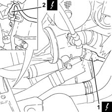
Applies to: engines: 1.3 JTD; all production periods
1. Disconnect the electrical connection from the engine oil pressure warning light switch.
| Name | Connector |
|---|---|---|
1 | Engine oil pressure sensor (switch) |
2. Disconnect the electrical connections from the heater plugs.
| Name | Connector |
|---|---|---|
2 | Heater plug |
3. Disconnect the electrical connections from the injectors.
| Name | Connector |
|---|---|---|
3 | Injector |
4. Disconnect the electrical connection from the cam angle sensor.
| Name | Connector |
|---|---|---|
4 | Timing sensor |
5. Disconnect the electrical connection from the air conditioning compressor engagement electromagnet.
| Name | Connector |
|---|---|---|
5 | Air conditioning compressor electro-magnet |
6. Undo the bolts securing the cable pass to the cylinder head.
7. Release the system cable loom (7a) from the attachments (7b) and move it aside.
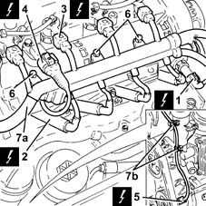
Applies to: engines: 1.3 JTD; all production periods
1. Disconnect the electrical connection from the fuel pressure regulator.
| Name | Connector |
|---|---|---|
1 | Fuel pressure regulator |
2. Disconnect the electrical connection from the E.G.R. valve.
| Name | Connector |
|---|---|---|
2 | EGR solenoid |
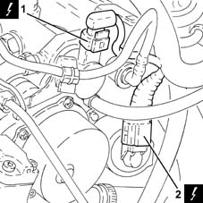
Applies to: engines: 1.3 JTD; all production periods
1. Disconnect the electrical connection from the fuel pressure sensor.
| Name | Connector |
|---|---|---|
1 | Fuel pressure sensor |
2. Disconnect the electrical connection from the excess pressure sensor.
| Name | Connector |
|---|---|---|
2 | Turbocharging sensor |
3. Disconnect the electrical connections (3a) and (3b) from the diesel electronic fuel injection control unit.
| Name | Connector |
|---|---|---|
3a | Engine management control unit |
| Name | Connector |
|---|---|---|
3b | Engine management control unit |
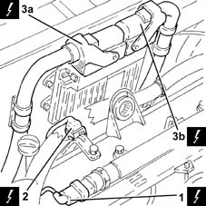
Applies to: engines: 1.3 JTD; all production periods
1. Disconnect the electrical connection from the fuel pre-heating device.
| Name | Connector |
|---|---|---|
1 | Fuel heating resistance and temperature sensor |
2. Disconnect the electrical connection for the water-in-fuel filter sensor.
| Name | Connector |
|---|---|---|
2 | Water in diesel filter sensor |
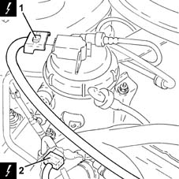
Applies to: engines: 1.3 JTD; all production periods
Proceed with removal .
1. Undo the nut (1a) and disconnect the electrical connection (1b) from the alternator.
| Name | Connector |
|---|---|---|
1b | Alternator |
2. Open the protective cover (2a), undo the nut (2b) and disconnect the electrical connection (2c) from the starter motor.
| Name | Connector |
|---|---|---|
2c | Starter' motor |
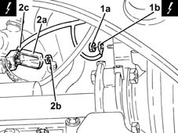
Applies to: engines: 1.3 JTD; all production periods
Release the cable loom from the bands securing it to the air chamber and remove it.
Applies to: engines: 1.3 JTD; all production periods
Refitting
RemovingRefit in its seating the system cable loom and secure it to the bands on the air chamber.
Connect the electrical connection to the starter motor, secure it with the nut and close the protective cover.
Proceed with refitting .
Connect the electrical connections to the diesel electronic injection control unit.
Connect the electrical connection to the water-in-fuel filter presence sensor.
Connect the electrical connection to the fuel pre-heating device.
Connect the electrical connection to the excess pressure sensor.
Connect the electrical connection to the fuel pressure senor.
Connect the electrical connection to the EGR solenoid.
Connect the electrical connection to the fuel pressure regulator.
Refit the wiring loom in its seating and secure it.
Tighten the bolts securing the cable pass to the cylinder head.
Connect the electrical connection to the air conditioner compressor electromagnet.
Connect the electrical connection to the cam angle sensor
Connect the electrical connections to the injectors.
Connect the electrical connections to the heater plugs.
Connect the electrical connection to the engine oil pressure warning light switch.
Connect the electrical connection for the rpm sensor.
Connect the electrical connection to the engine coolant temperature sensor.
Connect the electrical connection.
Connect the electrical connections to the pre-heating control unit.
Connect the earth lead to the battery terminal (-) and secure it using the nut.
Connect the electrical connection to the engine compartment junction box.
Refit the engine compartment junction box in its seating, rotating it on its hinges.
Connect the electrical connections to the engine compartment junction box.
Connect the lead to the engine compartment junction unit and secure it using the nut.
Refit the engine compartment junction box cover in its seating.
Replace the air filter, complete with air flow meter, in its housing.
Connect the air intake sleeve to the turbocharger, air flow meter side, and tighten the band.
Connect the electrical connection to the air flow meter.
Proceed with refitting 5530B52 Battery DRIP TRAY/SUPPORT - R.R. .
Proceed with refitting 5530B10 battery - r+r .
Remove the car from the ramps.
Topics linked from this page (21)
- 5530B10 battery - r+r
- 5530B52 Battery DRIP TRAY/SUPPORT - R.R.
- A10 Alternator
- A20 Starter' motor
- A40 Heater plug
- K100 Fuel heating resistance and temperature sensor
- K30 Engine oil pressure sensor (switch)
- K31 Water in diesel filter sensor
- K36 Engine temperature sender unit
- K41 Air flow meter ( ENGINE )
- K46 Rpm sensor
- K47 Timing sensor
- K82 Turbocharging sensor
- K83 Fuel pressure sensor
- L20 Air conditioning compressor electro-magnet
- L30 EGR solenoid
- M10A Engine management control unit ( ENGINE )
- M10B Engine management control unit ( ENGINE )
- M15 Plug preheating control unit
- N70 Injector
- N77 Fuel pressure regulator